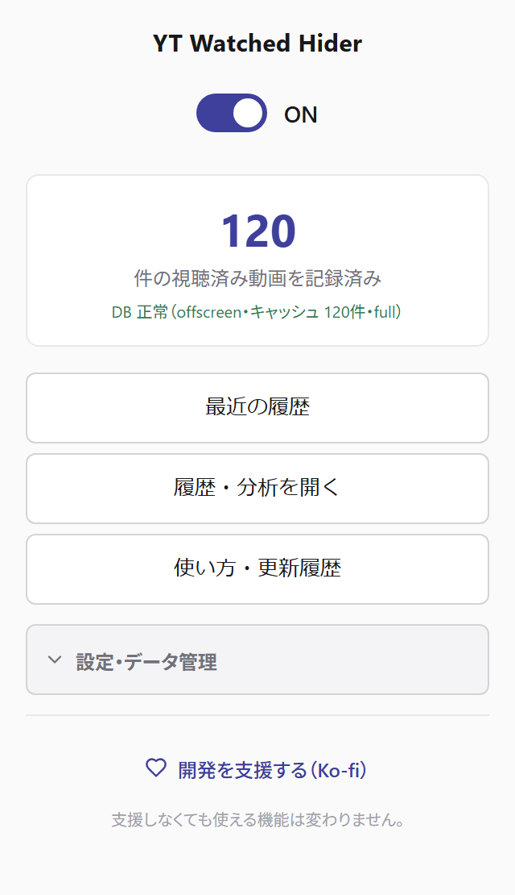
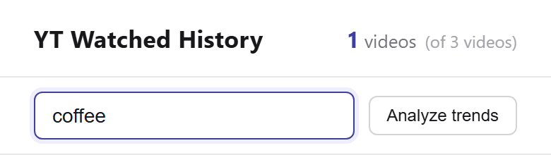
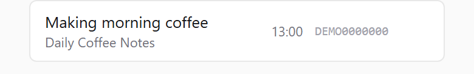

YWH
YWH12:00Watched
Making morning coffee
Daily Coffee Notes
A Chrome extension for YouTube.
Free · For Chrome on desktop
With YWH (sample data)
Of six videos, the three watched ones are hidden.
An illustration modeled on the YouTube home page. Videos and history are sample data, and the images are generated. This is not the actual YouTube interface.
It only changes what your lists show.
Switch it anytime from the extension icon.
Read the first steps
For the day you want it again.
Search the videos YWH has recorded by title or channel name.
How to search your historyArtist rankings draw on recorded history, including Topic channels.
“Total duration” adds up video lengths; it is not your actual listening time.

“Making morning coffee” matches

YWH records videos when playback ends or when it detects watched progress in a list. You can adjust the progress threshold in settings.
Recorded videos are hidden from lists. Choose where hiding applies—for example, keep watched videos in search results.
Use the extension’s toggle, or choose to dim watched videos instead of hiding them.
Before you install
Storage and network
Watch history and settings are stored locally. Saved history is not sent to a developer server.
The extension contacts YouTube for video information and actions you start, such as syncing liked videos.
Credit lookups or rechecks you explicitly run may send track and artist search terms to MusicBrainz.
Read the privacy policyYouTube Watched Hider
Review the details and permissions in Chrome Web Store, then choose “Add to Chrome”.